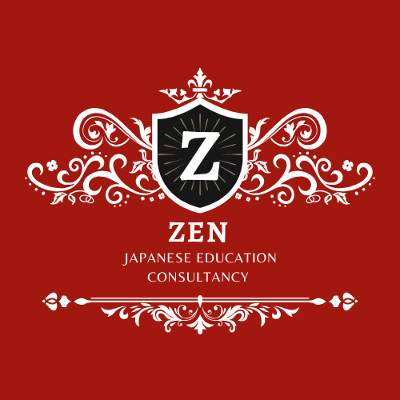
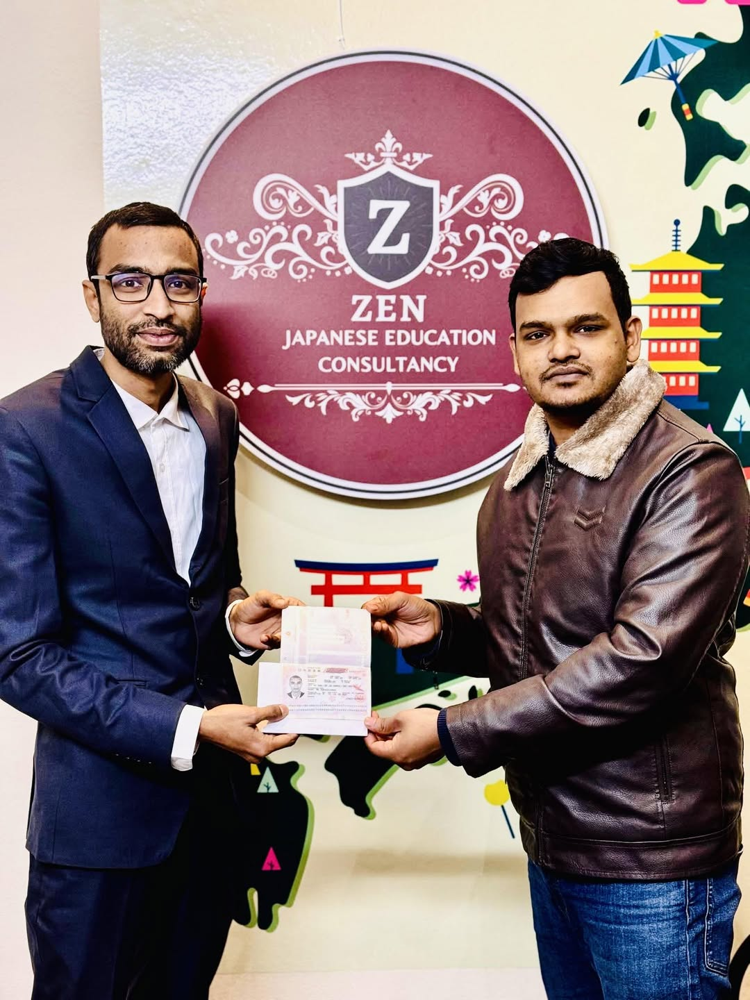
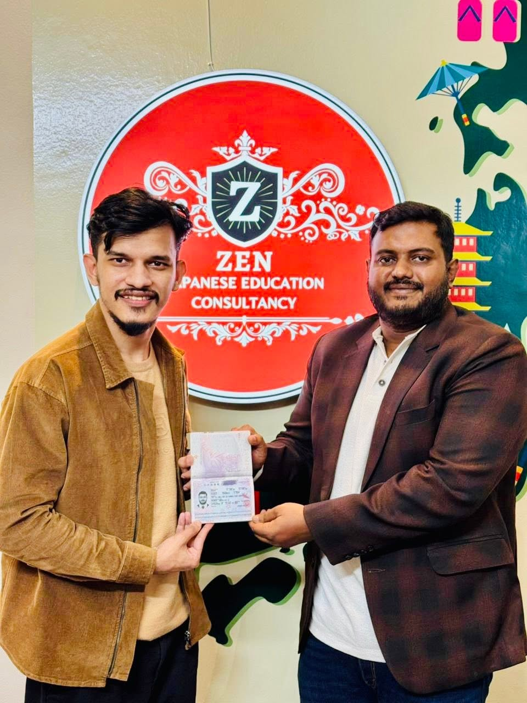
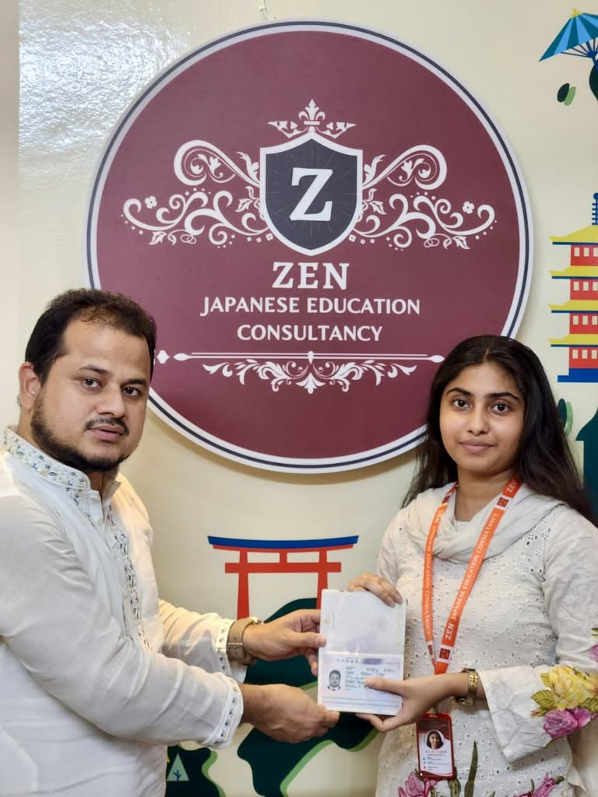
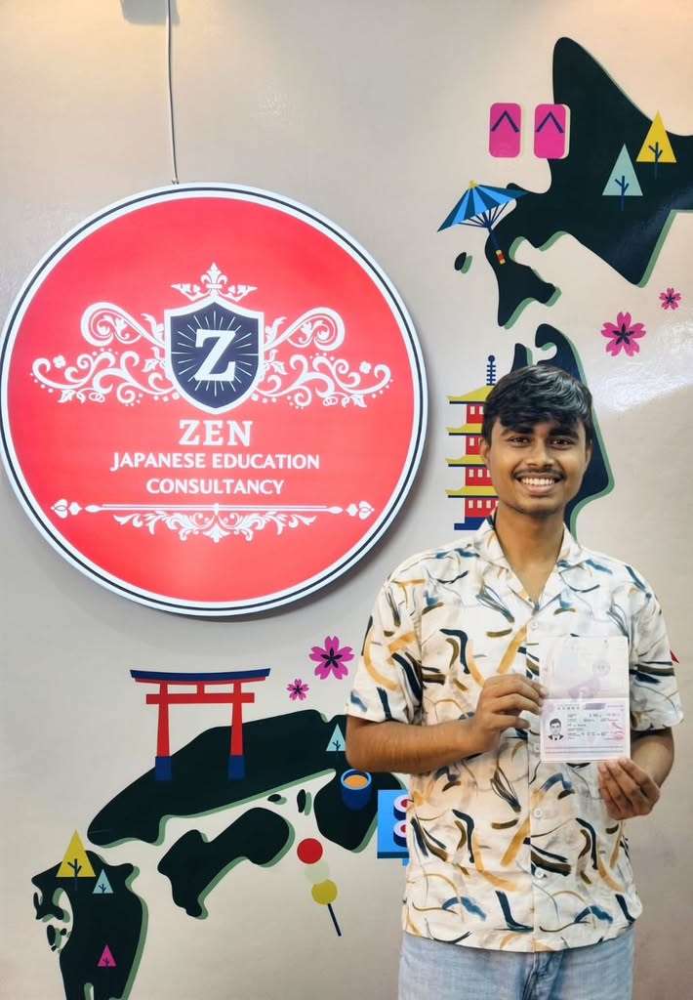
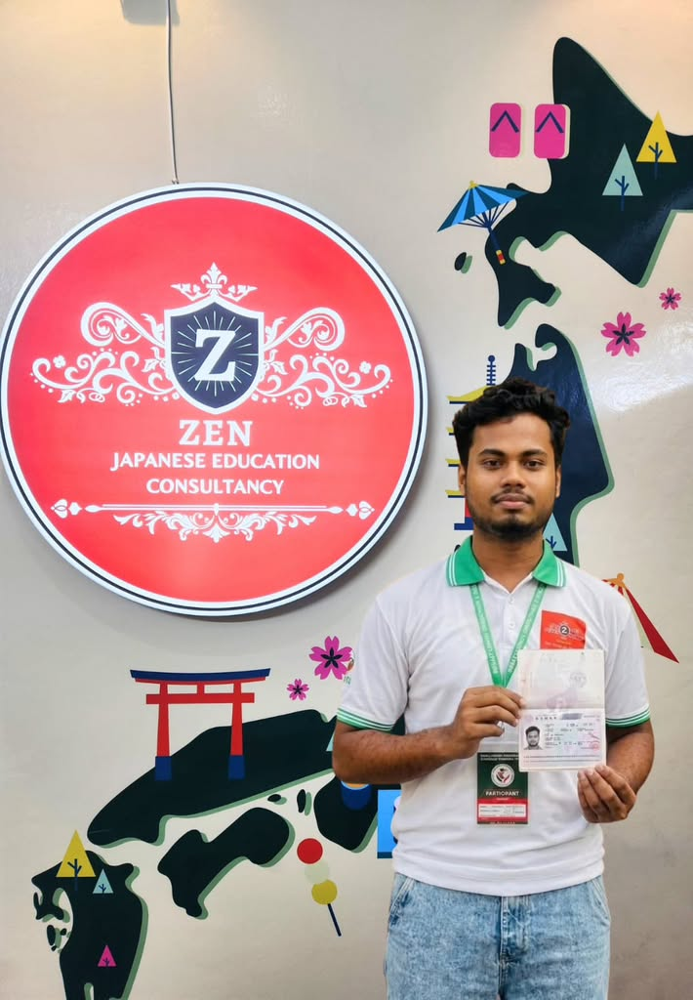
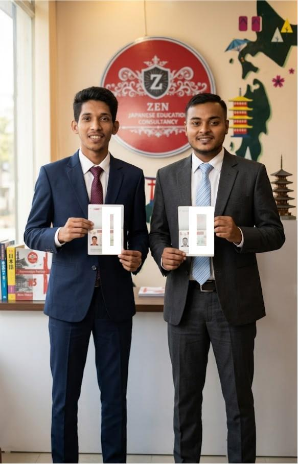
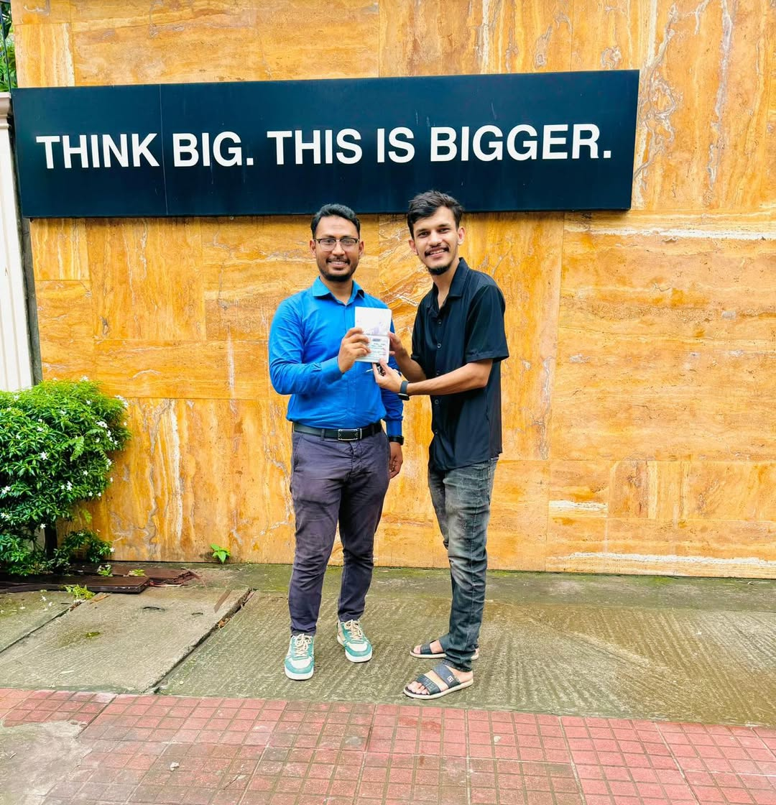

Empowering Your Future with Japanese Language & Education
Dreamed in Bangladesh 🇧🇩 — Achieved in Japan 🇯🇵







Real student success moments from ZJEC. Student names and personal information can be added only with the student's consent.
At Zen Japanese Education Consultancy (ZJEC), we believe that education is more than learning a language—it is the foundation for building a successful and meaningful future in Japan. Established with a strong commitment to connecting Bangladesh and Japan, ZJEC has developed into a trusted education and career support organization dedicated to helping Bangladeshi students and professionals pursue educational and career opportunities in Japan. Our mission is to provide students with not only Japanese language education, but also the knowledge, discipline, cultural understanding, and practical preparation necessary to live, study, and work successfully in Japanese society. 🇧🇩 A Trusted Japanese Education Organization in Bangladesh ZJEC is a government-registered Japanese language education organization in Bangladesh and has built a strong reputation for quality Japanese language education, student guidance, and Japan-related educational support. Our commitment to education, student development, and contribution to international human-resource development has enabled us to receive recognition and awards for our activities and contribution to the education sector. We continuously work to maintain a professional, transparent, and responsible educational environment where students can prepare themselves properly before taking the next step toward Japan. 🇯🇵 A Bridge Between Bangladesh and Japan Our activities are not limited to Bangladesh. ZJEC also has a Japanese company, Zen Japanese G.K. (Zen Japanese 合同会社), in Japan. Through our presence in both countries, we are able to understand the expectations of Japanese educational institutions, companies, and society while also understanding the needs and challenges faced by Bangladeshi students. This Bangladesh–Japan connection allows us to provide more practical and reliable support throughout a student's journey—from initial counseling and Japanese language preparation to departure and life in Japan. 🎓 1,100+ Students Successfully Connected to Japan One of our proudest achievements is that more than 1,100 students have so far travelled to Japan through our network and support. Behind every student is a different dream—a university education, a Japanese language school, a professional career, or a better future. We therefore believe that our responsibility does not end when a student receives a visa. Our goal is to prepare students properly before they leave Bangladesh and continue supporting them after they arrive in Japan. 🏫 Collaboration with Leading Japanese Schools ZJEC works with Class 1 / top-category Japanese language schools and educational institutions in Japan, giving our students access to quality educational pathways and reliable institutional support. Our professional approach, student preparation, documentation standards, and understanding of Japanese educational expectations have helped us establish relationships with a growing number of Japanese schools. Representatives from several Japanese educational institutions have also visited our Bangladesh office and expressed their appreciation for our professional environment, student support system, and commitment to maintaining high standards. We warmly welcome Japanese language schools, universities, vocational schools, and educational organizations to visit our Bangladesh office and explore opportunities for cooperation. 🤝 Welcome to Japanese Schools & Companies ZJEC is open to building long-term partnerships with organizations that share our commitment to responsible international education and human-resource development. We welcome: 🇯🇵 Japanese Language Schools 🎓 Universities & Vocational Schools 🏢 Japanese Companies 👷 SSW & TITP-related organizations 💼 Recruitment and human-resource companies 🌏 International education organizations 💰 Companies and investors interested in Bangladesh 🤝 Organizations interested in Bangladesh–Japan business cooperation Our Bangladesh office is always open for professional discussions, institutional meetings, partnership proposals, and business collaboration. We believe that strong relationships create stronger opportunities for students and businesses in both countries. 🇯🇵 Support for Bangladeshi Students in Japan Our relationship with students does not end after they leave Bangladesh. Through our Japan-side network and presence, we strive to provide practical support to Bangladeshi students living in Japan. Our support may include guidance related to: Daily life in Japan Educational matters Communication and language difficulties Cultural adaptation General living guidance School-related communication Career and future planning Emergency or difficult situations where appropriate We want our students to feel that they have a reliable support network even after arriving in Japan. 👨💼 Leadership & Community Contribution ZJEC is led by Chairman & Founder Md. Nazmus Sakib (SAKIB ZEN), who is actively involved in Bangladesh–Japan educational and community activities. He also serves as Treasurer of BSSAJ (Bangladeshi Students' Support Association in Japan), an organization that works to support Bangladeshi students and community members in Japan. This involvement provides valuable insight into the real challenges faced by Bangladeshi students in Japan and strengthens our commitment to responsible student support. 🤝 Strong Bangladesh–Japan Network Over the years, ZJEC has developed relationships with educational institutions, organizations, professionals, and stakeholders in both Bangladesh and Japan. We are committed to maintaining constructive relationships with relevant government and institutional stakeholders and have received cooperation and support for our Bangladesh–Japan education and human-resource development activities. Our objective is simple: To create a reliable and responsible pathway between Bangladesh and Japan. 💰 Transparent & Student-Friendly Policy We believe that students and their families deserve complete transparency. Therefore, ZJEC follows a clear and student-focused approach to fees and procedures. Depending on the program and applicable conditions: No service charge is required before visa issuance. No file-opening charge. No registration charge. Scholarship opportunities may be available based on academic results and applicable institutional criteria. Students may be eligible for up to 100% scholarship opportunities, depending on their results, school, program, and scholarship conditions. We believe that financial transparency is an essential part of building trust with students and their families. 🎓 Scholarship Opportunities We strongly believe that talented and hardworking students should have access to quality education regardless of their financial background. For eligible students, we provide guidance regarding scholarship opportunities, including scholarships that may cover up to 100% of applicable tuition/course fees, depending on academic performance and the conditions established by the relevant educational institution. Our counseling team helps students understand the eligibility requirements and choose appropriate opportunities. ⏰ Discipline, Punctuality & Japanese Culture Studying in Japan requires much more than knowing Japanese grammar. Students must understand punctuality, discipline, responsibility, respect, communication etiquette, workplace manners, social rules, and Japanese culture. This is why cultural education is an important part of our preparation. At ZJEC, we strongly emphasize: Time Management + Discipline + Japanese Language + Culture + Responsibility Before sending students to Japan, we work to ensure that they understand the importance of Japanese social and educational norms. Our goal is not simply to send students to Japan. Our goal is to prepare students to succeed after they arrive in Japan. 🌏 Our Responsibility We understand that sending a student overseas is a major responsibility. A student represents not only themselves, but also their family, their educational institution, their country, and the organization that supported them. Therefore, we carefully emphasize: Honest counseling Proper documentation Japanese language preparation Cultural understanding Interview preparation Discipline and punctuality Realistic career guidance Responsible communication Continuous student support We believe that responsible recruitment and proper preparation create long-term trust between Bangladeshi students and Japanese institutions. 🌸 Why Japanese Institutions Choose to Work With ZJEC Our growing relationships with Japanese educational institutions are built on several principles: ✔ Professional Communication We respect Japanese business etiquette, deadlines, procedures, and communication standards. ✔ Student Quality We focus on preparing students linguistically, academically, and culturally before introducing them to Japanese institutions. ✔ Transparency We believe in clear communication with students, families, schools, and partner organizations. ✔ Cultural Preparation Students receive guidance about Japanese culture, discipline, manners, and social expectations. ✔ Bangladesh–Japan Presence With operations and networks in both Bangladesh and Japan, we can understand the needs of both sides. ✔ Long-Term Partnership We seek sustainable relationships rather than short-term recruitment. 🇯🇵 A Warm Invitation to Our Japanese Partners We sincerely welcome Japanese educational institutions and companies to visit Zen Japanese Education Consultancy in Bangladesh. We would be pleased to introduce our organization, meet your representatives, discuss student recruitment opportunities, exchange ideas, and explore long-term cooperation. We also welcome companies involved in SSW, TITP, recruitment, human resources, and international business, as well as organizations and investors interested in exploring opportunities in Bangladesh. Our door is always open for meaningful cooperation. 🌱 Our Commitment At ZJEC, our vision goes beyond sending students from Bangladesh to Japan. We want to build a sustainable Bangladesh–Japan education and human-resource development ecosystem where: Students receive quality preparation → Japanese institutions receive well-prepared students → Companies receive responsible human resources → Students build successful careers → Both Bangladesh and Japan benefit. This is the future we are working toward. 🇧🇩🤝🇯🇵 ZJEC — Connecting Dreams, Education & Opportunities From the first Japanese character a student learns in Bangladesh to their first day at a Japanese school or workplace, ZJEC aims to stand beside them throughout the journey. We are proud of the trust placed in us by students, parents, Japanese educational institutions, companies, and our partners. And we are ready to welcome more schools, companies, organizations, and investors who share our vision of building a stronger and more meaningful connection between Bangladesh and Japan. Zen Japanese Education Consultancy (ZJEC) Building Bridges Between Bangladesh & Japan. Learn. Prepare. Connect. Succeed. 🇯🇵
53, Madina Tower 8th Floor (Lift 7A) Nayapara, Dania College Road (Beside Dania College), Jatrabari, Dhaka 1236, Bangladesh
• Mobile Number: +880 1833039792
• Email: zenjapaneseec@gmail.com
• Facebook Page: Facebook Bangladesh
• あすかパレス, 205 号, 1-chōme-18-6 Nakadai, Itabashi City, Tokyo 174-0064, Japan.
• Mobile Number: ☎️ +8801332117220 ☎️+880190500051
• Email: zenjapaneseec@gmail.com
• Facebook Page: Facebook Japan